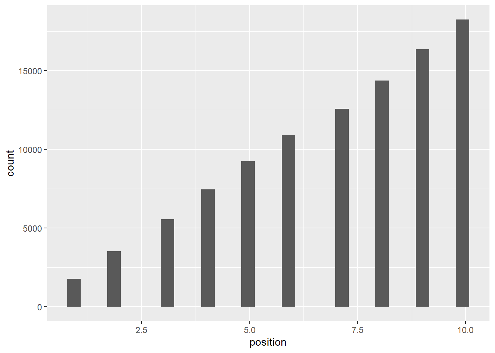
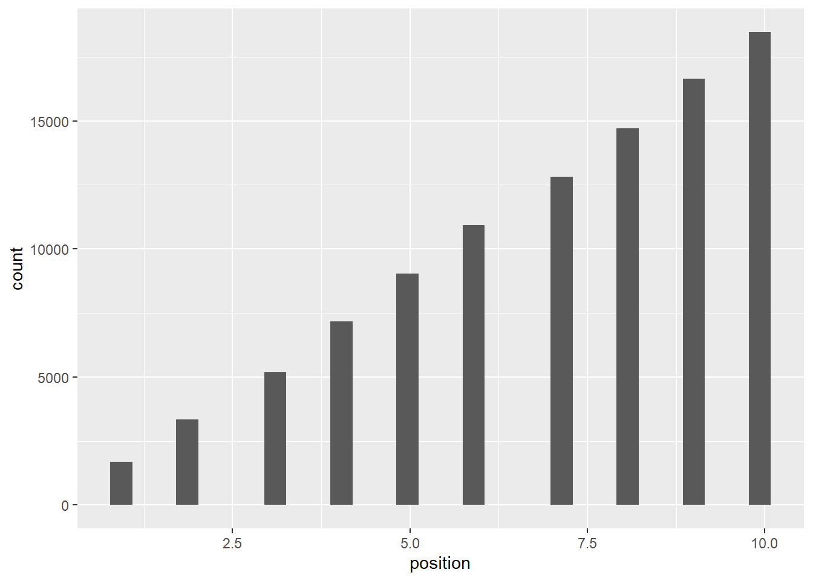
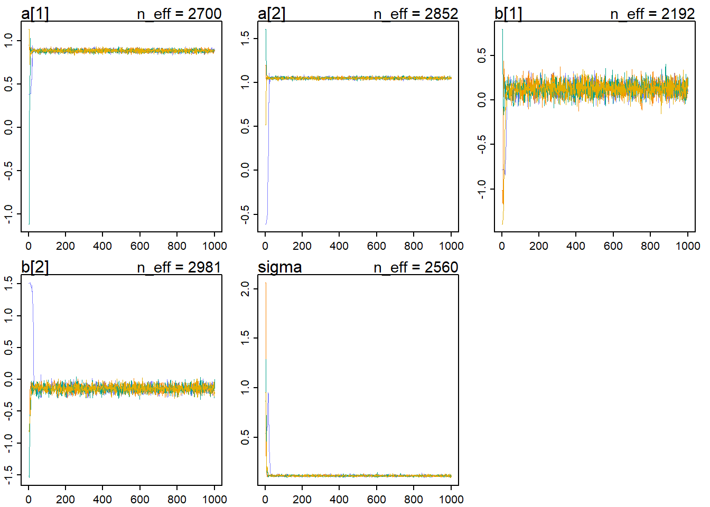
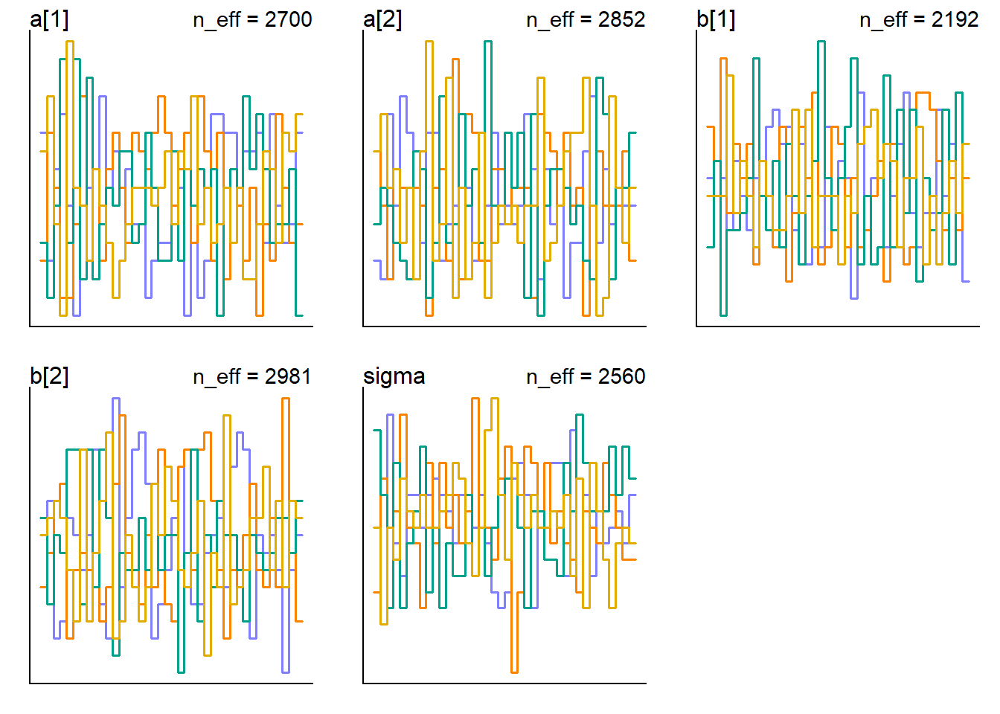
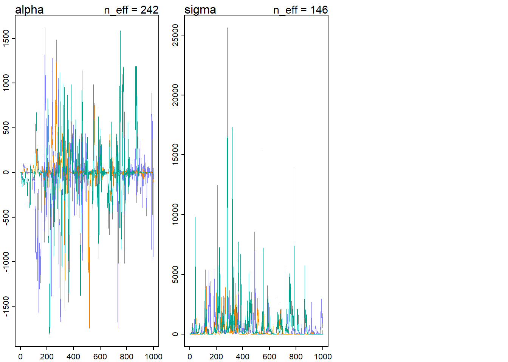
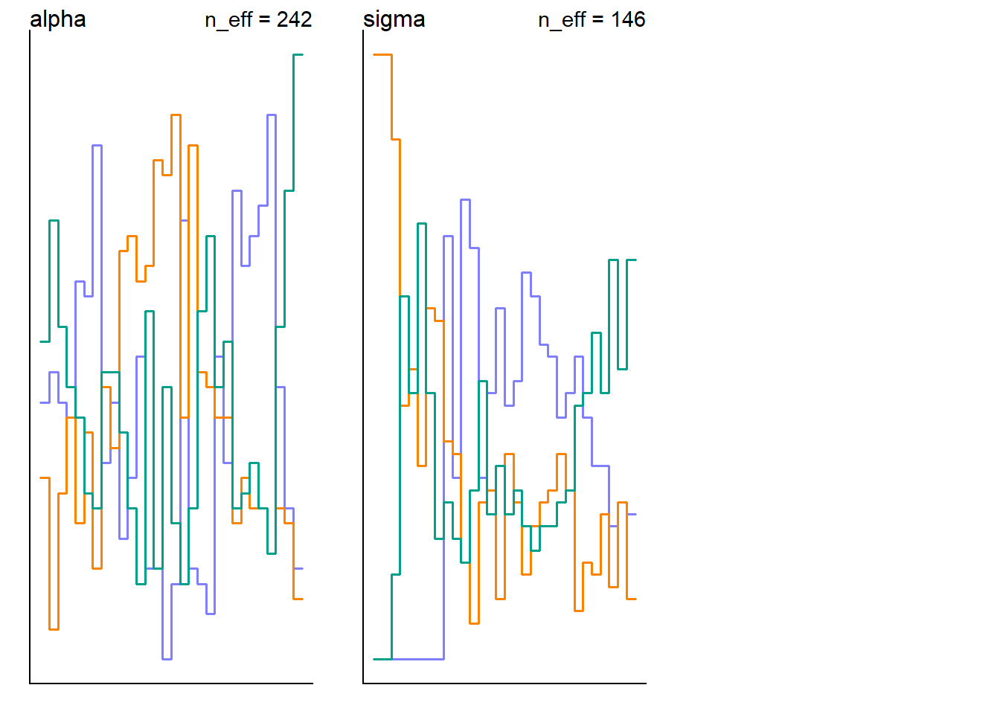

Chapter 9 Markov Chain Monte Carlo
9.1 Chapter Notes
Simulating King Markov’s Journey (A Metropolis Algorithm)
The chapter opens with an implementation of the Metropolis algorithm, through a parable about the king of a ring of ten islands. Each week, the king decides whether to remain on his current island, or move to a neighbouring island. A proposal island is chosen by flipping a coin - either the next island clockwise or anti-clockwise from the current one. Whether the king moves to the proposal island or stays put depends on a random draw, with the probability weighted by the relative population of the island:
num_weeks <- 1e5
positions <- rep(0,num_weeks)
current <- 10
for ( i in 1:num_weeks ) {
## record current position
positions[i] <- current
## flip coin to generate proposal
proposal <- current + sample( c(-1,1) , size=1 )
## now make sure he loops around the archipelago
if ( proposal < 1 ) proposal <- 10
if ( proposal > 10 ) proposal <- 1
## move?
prob_move <- proposal/current
current <- ifelse( runif(1) < prob_move , proposal , current )
}
position_data <- tibble(week = 1:100000, position = positions)Overall time, the proportion of time the king spends on each island is in proportion to its population:

The chapter also displays the first 100 weeks so you can see the path that the king takes:

Revisit: Return to the Overthinking box on page 276: Overthinking: Hamiltonian Monte Carlo in the raw.
The chapter introduces the ulam tool for fitting Hamiltonian Monte Carlo (HMC) models in Stan. We load the ruggedness data from chapter 8 and fit the interaction model, this time using HMC instead of quadratic approximation.
To save computation, we want to pre-process any variable transformations before passing the model to Stan. It’s also good practice to remove columns from the data frame if they will not be included in the model.
data(rugged)
data_rugged <- as_tibble(rugged)
data_rugged <- data_rugged%>%
mutate(log_gdp = log(rgdppc_2000))%>%
filter(!is.na(log_gdp))%>%
mutate(log_gdp_std = log_gdp / mean(log_gdp),
rugged_std = rugged / max(rugged),
cid <- if_else(cont_africa==1,1,2),
cid = factor(cid))%>%
select(log_gdp_std, rugged_std,cid)The model in chapter 8, fit using quadratic approximation looks like this:
m8.3 <- quap( alist(
log_gdp_std ~ dnorm( mu , sigma ) ,
mu <- a[cid] + b[cid]*( rugged_std - 0.215 ) ,
a[cid] ~ dnorm( 1 , 0.1 ) ,
b[cid] ~ dnorm( 0 , 0.3 ) ,
sigma ~ dexp( 1 )
) , data=data_rugged )
precis( m8.3 , depth=2 )## mean sd 5.5% 94.5%
## a[1] 0.8865653 0.015674758 0.86151402 0.91161660
## a[2] 1.0505660 0.009936003 1.03468636 1.06644567
## b[1] 0.1324963 0.074200164 0.01391007 0.25108246
## b[2] -0.1425853 0.054746135 -0.23008023 -0.05509043
## sigma 0.1094874 0.005934386 0.10000308 0.11897167Here is the same model using ulam:
set.seed(100)
m9.1 <- ulam( alist(
log_gdp_std ~ dnorm( mu , sigma ) ,
mu <- a[cid] + b[cid]*( rugged_std - 0.215 ) ,
a[cid] ~ dnorm( 1 , 0.1 ) ,
b[cid] ~ dnorm( 0 , 0.3 ) ,
sigma ~ dexp( 1 )
) , data=data_rugged , chains=4, cores=4, cmdstan = TRUE )## mean sd 5.5% 94.5% n_eff Rhat4
## a[1] 0.8862251 0.016028192 0.86000551 0.9120409 2699.895 0.9990555
## a[2] 1.0511253 0.010116677 1.03477395 1.0672044 2851.886 0.9990817
## b[1] 0.1312790 0.073579475 0.01514265 0.2484935 2191.984 0.9995037
## b[2] -0.1422040 0.054041641 -0.22564370 -0.0549517 2981.076 0.9988560
## sigma 0.1115890 0.006322299 0.10219079 0.1215263 2560.062 1.0000555We show the traceplot and trankplot for the model fit, in order to contrast with more pathological plots that will be shown in the next section.
traceplot(m9.1)
trankplot(m9.1)
The chapter includes an example of a model with very flat priors and very little data, in order to demonstrate how you may be able to tell if you’re attempt at model fitting has gone wrong somewhere.

The chain’s here are not stationary, and they do not converge to the same region of high probability. They are a warning that something has gone wrong.
In this case we can fix the issue by using even slightly informative priors.
Another way that model fitting can go wrong is with non-identifiable parameters. We saw this in the leg length example in chapter 6.
9.2 Questions
Revisit.